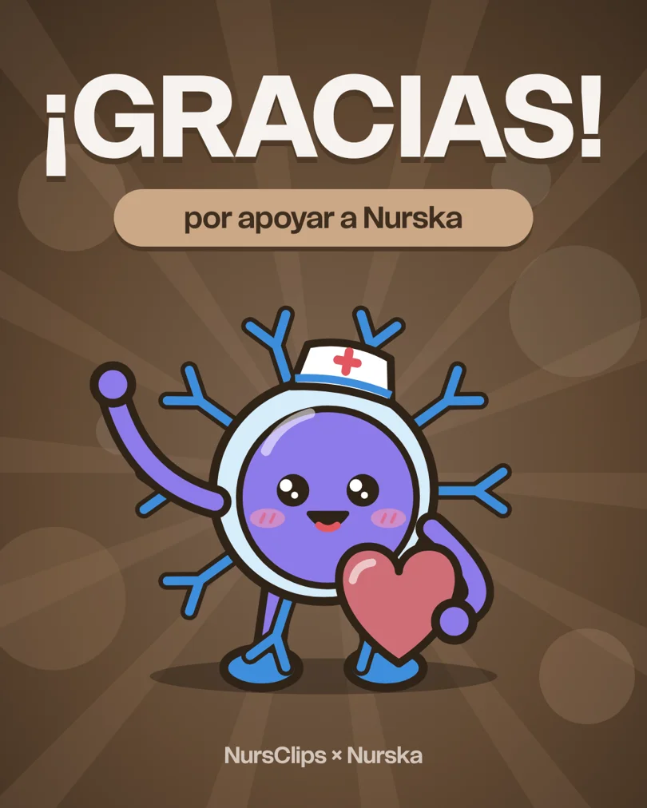

Gracias por apoyar a Nurska
Tu aportación ayuda a que la app siga siendo gratis, sin internet y hecha con mucho cariño para quienes cuidan a los pacientes.
Cada fármaco nuevo, cada escala y cada actualización se hacen con ese apoyo.
Diego
Nurska y NursClips